| 細分市場 | 基準年規模 | 預測規模 | CAGR | 研究機構 | 來源 |
|---|
不同研究機構的市場規模常相差 2–3 倍(定義不同:元件 vs 含軟體服務、是否含車用/手機)。本頁盡量並列兩家機構數字呈現區間。
| 廠商 | 總部 | 產品／型號 | 關鍵規格 | 典型應用 | 來源 |
|---|---|---|---|---|---|
| Unitree 宇樹科技 | 中國 | Dex5-S | 22 自由度(全主動)、1:1 人手尺寸(102×187×26mm)、620g、單手負載 1kg(最大 2kg)、1kHz 控制(Ethernet/USB);分標準與觸覺兩種配置(前代 Dex5-1 最多 94 點觸覺);售價 ¥39,900(約 US$6,500)起,另有 Pro 版 | 人形機器人(G1/H2 等)末端執行器、具身智能資料採集與開發 | 連結 ↗ |
| Boston Dynamics | 美國 | Atlas 四指靈巧手(2026-10 發表) | 13 自由度(拇指 4、其餘各指 3),刻意捨去小指以降低成本、體積與故障點;指尖與掌心內建壓力式觸覺感測;為 sim-to-real 強化學習訓練設計,支援手內重定向、捏取/三點抓取、滑移恢復與工具抓握 | Atlas 人形機器人工業操作、工具使用(電鑽/焊槍等) | 連結 ↗ |
| Shadow Robot | 英國 | DEX-EE | 3 指腱繩驅動、12 自由度,與 Google DeepMind 合作開發、以高耐用強化學習為目標;模組化可更換觸覺模組:近節 22 + 中節 14 個感測單元,每單元為磁鐵+3 軸霍爾效應感測(法向+剪切力+溫度,12-bit、100Hz),另有指尖高密度光學觸覺 | 機器學習/強化學習靈巧操作研究 | 連結 ↗ |
| Wonik Robotics | 南韓 | Allegro Hand V5 / V5 Plus / V5 Sense | V5 為 3 指 9 自由度,V5 Plus 為 4 指 16 自由度;指尖搭載 360° 全向氣壓式觸覺感測器,V5 Sense 版配 16 點壓力分布式觸覺;約 1.0kg、抓握力約 15kg;參考價約 US$11,000 起 | 機器人抓取研究、機器學習操作訓練(Allegro 系列為學界長期標準平台) | 連結 ↗ |
| Inspire Robots 因時機器人 | 中國 | RH56 系列(RH56F1/H1/E2/DFX 等) | 5 指 6 自由度 12 關節、約 470–620g;觸覺版可量測最大 30N 接觸力(精度 ±5%FS);拇指握力 15–30N(依型號)、RS485/CAN FD、1kHz 通訊;E2 等型號直接相容 Unitree G1/H2 人形平台 | 人形機器人量產末端執行器(多家人形廠採用)、科研 | 連結 ↗ |
| PSYONIC | 美國 | Ability Hand(Robotics Edition) | 6 自由度(6 顆 BLDC,支援扭矩/速度/位置控制)、30 點力感測電阻觸覺(每指 6 點)可串流 touch map;power grasp 78N、約 470g、I2C/BLE/UART/RS-485;源自義肢產品線 | 人形機器人與義肢雙用途、contact-rich 操作策略學習(NASA、Apptronik 等研究採用) | 連結 ↗ |
| Clone Robotics | 波蘭 | Clone Hand | 仿人肌肉骨骼結構、27 自由度;專有液壓人工肌肉(McKibben 式)+比例力閥驅動,碳纖維骨骼與人工韌帶;可握持約 15 磅(約 6.8kg);無陣列式觸覺感測公開規格,精細動作仍在開發中 | 仿生人形(Protoclone)研究、遙操作示範 | 連結 ↗ |
| PaXini 帕西尼感知 | 中國 | DexH13(GEN2) | 4 指 16 自由度(13 主動+3 被動,拇指獨立 4 主動);整手整合 1,140 個 ITPU 多維觸覺單元(3,420 通道、最高 15 維感知:材質/溫度/紋理等)、8MP 手眼 RGB 相機;負載約 5kg、約 0.8–1.0kg;通路報價約 US$14,000–30,000 | 具身智能觸覺資料採集、精細抓取與材質辨識 | 連結 ↗ |
| LinkerBot 靈心巧手 | 中國 | LinkerHand L30(旗艦腱繩款) | 5 指 17 自由度/21 關節(含 1 腕部自由度)、腱繩驅動+高解析編碼器與張力控制;全系列涵蓋 11–42 自由度、連桿/直驅/腱繩三條技術路線(CES 2026 展出);搭配 Linker Open TeleDex 可同步採集視覺+觸覺+本體感知三模態資料 | 具身智能大模型訓練資料採集、人形機器人末端 | 連結 ↗ |
| OYMotion 傲意科技 | 中國 | ROHand(ROH-AP001) | 11 關節、6 主動自由度;每指內建力感測器(量程 0.1–25N、150Hz 更新)支援即時力控;指尖力 ≥4.41N、拇指 ≥9.8N;約 640g(含腕)、UART/RS485/CAN;參考價約 US$9,750 起 | 人形機器人末端與智能義肢(義肢技術移植) | 連結 ↗ |
| 細分市場 | 基準年規模 | 預測規模 | CAGR | 研究機構 | 來源 |
|---|---|---|---|---|---|
| 觸覺感測器(整體市場) | US$19.04B (2025) | US$56.24B (2034) | 12.79% (2026–2034) | The Insight Partners | 連結 ↗ |
| 機器人用軟性(flexible)觸覺感測器 | US$266M (2025) | US$795M (2034) | 17.1%(報告標示;以基期/終值推算約 13%) | Intel Market Research | 連結 ↗ |
| 機器人系統用扭矩感測器(六軸力/扭矩占約 45%) | US$2.70B (2026) | US$6.88B (2035) | 11.0% (2026–2035) | Roots Analysis(2026-07 更新) | 連結 ↗ |
完整的六軸力/扭矩感測器與觸覺皮膚廠商表在「🤚 5 觸覺」分頁;IMU/振動在「🌀 7 平衡/動作感」分頁。
視覺是資訊量最大的感官。工業上會把「看得懂是什麼」（RGB 相機）、「知道在哪裡」（深度相機、LiDAR、ToF）和「看得到溫度」（熱像儀）分開選型，再做融合。
| 產品照片 | 廠商 | 代表產品／型號 | 關鍵規格／特色 | 典型應用 | 官網／來源 |
|---|---|---|---|---|---|
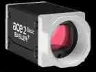 |
Basler德國 | ace 2 R（2024/12）、ace 2 GMSL | 25 MP 全域快門、21 fps，5GigE／GigE／USB3 | 工廠自動化、物流、機器人導引 | 連結 ↗ |
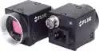 |
Teledyne Vision Solutions（原 FLIR IIS）美國 | Blackfly S GigE（新 5 MP 捲簾快門）、Forge | 小型 GigE／USB3 相機產品線 | 機器人視覺、檢測 | 連結 ↗ |
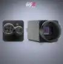 |
LUCID Vision Labs加拿大 | Triton Smart（2025/09）、Triton2 2.5GigE | 採 Sony IMX501，AI 直接在感測器上推論，免主機 PC | 邊緣 AI 檢測 | 連結 ↗ |
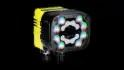 |
Cognex 康耐視美國 | In-Sight 3800／8900、In-Sight L38 3D；OneVision 雲端 AI 平台（2025/06） | 雲端建立與訓練 AI 視覺應用，多廠區部署 | 多廠區 AI 瑕疵檢測 | 連結 ↗ |
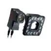 |
Keyence 基恩斯日本 | VS 系列智慧相機（2024/06）：VS-L／VS-S／VS-C | 內建 AI（ShapeTrax 3A）、自動對焦與自動視野 | 視覺導引取放、檢測 | 連結 ↗ |
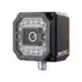 |
Hikrobot 海康機器人中國 | SC1000／SC3000 智慧相機、ID3000 讀碼器、3D 雷射輪廓感測器 | AI 讀碼（IP67）；微米級雷射輪廓量測 | 電子、電池、包裹量方稱重（DWS） | 連結 ↗ |
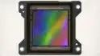 |
Sony Semiconductor（影像感測晶片）日本 | IMX927（2025/11 送樣）、IMX925／IMX947 | 105 MP 全域快門、100 fps | 上述多數工業相機的核心晶片 | 連結 ↗ |
| 產品照片 | 廠商 | 代表產品／型號 | 關鍵規格／特色 | 典型應用 | 官網／來源 |
|---|---|---|---|---|---|
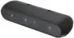 |
RealSense（2025/07 自 Intel 獨立）美國 | D555（2025）；D585 Pro（預計 2027 Q1 出貨）；D405／D415／D435／D455 | D555：PoE、全域快門、內建 IMU、支援 ROS 2 與 NVIDIA Holoscan | AMR、人形機器人 | 連結 ↗ |
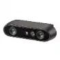 |
Orbbec 奧比中光中國 | Gemini 435Le、Gemini 305／345Lg（CES 2026）、Gemini 335 | 305：腕部相機，15 cm 處次毫米精度；345Lg：IP67、全暗到 100 klux | 機械手臂、戶外 AMR | 連結 ↗ |
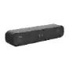 |
StereoLabs（2026/02 被 Ouster 收購）法國／美國 | ZED X HDR、ZED X One HDR、ZED X Max HDR、ZED X Mini | 120 dB HDR、IP67、GMSL2，深度可達 23 m | 戶外與工業機器人 | 連結 ↗ |
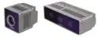 |
Luxonis美國 | OAK 4 D、OAK 4 S（2025/12 出貨） | Qualcomm RVC4 平台 48 TOPS、48 MP RGB + 雙目、PoE | 獨立運作的邊緣 AI 感知 | 連結 ↗ |
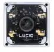 |
LUCID Vision Labs加拿大 | Helios2 Wide Chroma（2026/01） | ToF 深度 + 12.2 MP 彩色，出廠校正、IP67 | 料箱揀取、物料搬運 | 連結 ↗ |
| 產品照片 | 廠商 | 代表產品／型號 | 關鍵規格／特色 | 典型應用 | 官網／來源 |
|---|---|---|---|---|---|
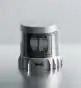 |
Ouster美國 | REV8 OS 系列（2026/05）：OS0、OS1、OSDome、OS1 Max | 號稱首款「原生彩色」光達；每秒 1,040 萬點；OS1 Max 256 線、200 m | Physical AI、重工業、智慧基礎設施 | 連結 ↗ |
| Hesai 禾賽中國 | JT128／JT64P／JT32／JT16（CES 2025） | 360°×189° 半球視野、265 g、IPX7 | 服務／清潔機器人、空間 3D 掃描 | 連結 ↗ | |
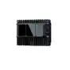 |
RoboSense 速騰聚創中國 | Airy（半球）、Fairy、E1R（固態） | E1R：數位 SPAD 晶片、無運動件、120°×90°；2025 年機器人光達出貨 30.3 萬台 | 人形機器人、四足機器人 | 連結 ↗ |
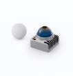 |
Livox 覽沃（大疆體系）中國 | Mid-360S | 360°×59°、10% 反射率 40 m、最近 0.1 m | AMR 與足式機器人 SLAM | 連結 ↗ |
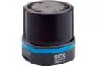 |
SICK 西克德國 | multiScan100-S（2025/06）、picoScan | 安全等級 3D 光達（PL b）、16 層、IP69K | AGV 防撞、港口起重機 | 連結 ↗ |
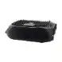 |
Seyond 圖達通美國 | Hummingbird D1（固態 0.01–50 m）、Robin W（超廣角） | 近距對接與倉庫廣角導航 | 倉庫 AMR／AGV | 連結 ↗ |
| 產品照片 | 廠商 | 代表產品／型號 | 關鍵規格／特色 | 典型應用 | 官網／來源 |
|---|---|---|---|---|---|
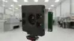 |
Sony Semiconductor日本 | DepthSense IMX556／IMX570（iToF）、IMX560（SPAD dToF） | IMX570：VGA、5 µm 像素；IMX560：約 10 萬 SPAD 像素 | ToF 相機核心晶片 | 連結 ↗ |
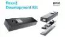 |
Infineon 英飛凌 + pmd德國 | REAL3 IRS2976C（VGA、約 10 m）、REAL3 Hybrid ToF | 混合 iToF + dToF 模組可取代旋轉雷射掃描器 | 掃地機器人、服務機器人 | 連結 ↗ |
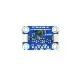 |
STMicroelectronics 意法半導體瑞士／法國 | VL53L9（2026/06 發表）、VL53L8CX | 54×42 區（2,268 區）、5 cm–9 m、100 fps、免校正 | 避障、SLAM、人數計算 | 連結 ↗ |
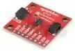 |
ams OSRAM奧地利 | TMF8829（2025 Q4 供貨） | 48×32 區、最遠 11 m、80° 視角、5.7×2.9 mm | 機器人防撞、佔用偵測 | 連結 ↗ |
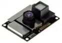 |
Analog Devices 亞德諾美國 | ADTF3175 模組 + ADSD3500 深度處理器 | 1 MP iToF、0.4–4 m 精度 ±3 mm | 工業自動化、物流 | 連結 ↗ |
| 產品照片 | 廠商 | 代表產品／型號 | 關鍵規格／特色 | 典型應用 | 官網／來源 |
|---|---|---|---|---|---|
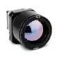 |
Teledyne FLIR美國 | Boson+ IQ 開發套件（2025/09）、A40／A50／A70 自動化熱像儀 | Boson+ IQ：Qualcomm 50 TOPS、2.5 W 內建 AI 偵測；A70：640×480、GigE Vision | 自主機器人／無人機、製程監控 | 連結 ↗ |
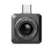 |
InfiRay／Raytron 艾睿光電中國 | WN2／WN2T 模組、TC2-C、ECOT（MWC 2026） | ECOT：10.5×10.5×5.8 mm 非製冷長波紅外模組 | 巡檢機器人、AMR 火災監看 | 連結 ↗ |
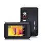 |
HIKMICRO 海康微影中國 | Eco／B／Pocket 系列（AI SuperScene，2026/04） | 裝置端 AI 標示異常 | 手持工業檢測、OEM 機芯 | 連結 ↗ |
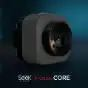 |
Seek Thermal美國 | EAGLE Core 600／300（2025/05） | 640×480、12 µm、60 Hz、功耗 < 1 W | 機器人、無人機、OEM | 連結 ↗ |
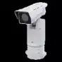 |
Axis Communications 安訊士瑞典 | Q1972-E、Q2111-E／Q2112-E、Q2101-TE | 高靈敏熱像、IP66/67、邊緣分析 | 廠區周界與設施監控 | 連結 ↗ |
| 細分市場 | 基準年規模 | 預測規模 | CAGR | 研究機構 | 來源 |
|---|---|---|---|---|---|
| 機器視覺（整體） | 158 億（2025） | 236 億（2030） | 8.3% | MarketsandMarkets | 連結 ↗ |
| 機器視覺（含軟體、服務） | 226 億（2025） | 610 億（2033） | 13.4% | Grand View Research | 連結 ↗ |
| 3D 機器視覺系統 | 50 億（2025） | 106 億（2032） | 11.5% | MarketsandMarkets | 連結 ↗ |
| 3D 相機（僅硬體） | 15.9 億（2025） | 34.9 億（2030） | 17.0% | MarketsandMarkets | 連結 ↗ |
| LiDAR（全部，含車用） | 32.7 億（2025） | 127.9 億（2030） | 31.3% | MarketsandMarkets | 連結 ↗ |
| LiDAR（僅車用） | 約 12 億（2025） | 36 億（2030） | 24% | Yole Group | 連結 ↗ |
| 機器人光達出貨量（非金額） | 禾賽 23.9 萬台、速騰 30.3 萬台（2025） | — | 年增 5～11 倍 | 禾賽、速騰 2025 年財報 | 連結 ↗ |
| ToF 感測器 | 66.8 億（2025） | 205 億（2031） | 20.6% | Mordor Intelligence | 連結 ↗ |
| ToF 感測器 | 58 億（2025） | 181 億（2034） | 12.8% | IMARC | 連結 ↗ |
| 非製冷紅外熱像 | 47.5 億（2025） | 76.3 億（2031） | 8.2% | Mordor Intelligence | 連結 ↗ |
| 紅外感測與成像（全部） | 86.1 億（2025） | 127.9 億（2032） | 5.8% | MarketsandMarkets | 連結 ↗ |
| CMOS 影像感測器 | 232 億（2024） | 301 億（2030） | 4.4% | Yole Group | 連結 ↗ |
工業上的「聽」不只是聽人說話，更重要的是聽機器健康狀態：軸承異音、壓縮空氣洩漏、局部放電，以及用超音波測距避障。
| 產品照片 | 廠商 | 代表產品／型號 | 關鍵規格／特色 | 典型應用 | 官網／來源 |
|---|---|---|---|---|---|
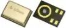 |
Infineon 英飛凌德國 | XENSIV IM73D122、IM72D128 | 密封雙振膜、SNR 最高 75 dB、麥克風本體 IP57 | 語音 AI、工業 IoT、聲音事件偵測 | 連結 ↗ |
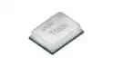 |
TDK InvenSense日本／美國 | SmartSound T5838（PDM）、T5848（I²S） | 低功耗、聲音喚醒（Acoustic Activity Detection） | 常時開啟的邊緣 AI 音訊 | 連結 ↗ |
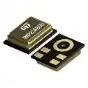 |
STMicroelectronics瑞士／法國 | IMP23ABSU | 類比麥克風、可收超音波頻段，官方有預測保養應用說明 | 機台聲學監測 | 連結 ↗ |
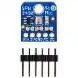 |
Goertek 歌爾微電子中國 | SD18OB261-060 等 | 2024 年全球聲學感測器市佔約 43% | 消費電子、機器人語音輸入 | 連結 ↗ |
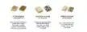 |
Syntiant（收購 Knowles 消費級 MEMS 麥克風）美國 | SiSonic 系列 | 2024/12 完成收購（1.5 億美元） | 耳機、IoT、手機 | 連結 ↗ |
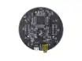 |
XMOS／Seeed；miniDSP英國；香港 | reSpeaker XVF3800 四麥陣列；UMA-16 v2 十六通道陣列 | 360° 遠場收音與降噪；UMA-16 可自製聲學相機 | 機器人語音介面、聲源定位 | 連結 ↗ |
| 產品照片 | 廠商 | 代表產品／型號 | 關鍵規格／特色 | 典型應用 | 官網／來源 |
|---|---|---|---|---|---|
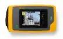 |
Fluke 福祿克美國 | ii915（2–100 kHz）、ii905 | LeakQ 洩漏量化、PDQ 局部放電、MecQ 機械故障；舊款 ii900/ii910 已於 2024/11 停產 | 壓縮空氣／氣體洩漏、電氣局部放電、軸承 | 連結 ↗ |
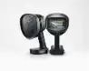 |
UE Systems美國 | Si2-Pro、Si2x-Pro（防爆）、Si2-PD；Ultraprobe 15,000 | 一台相機兼顧洩漏、局部放電、軸承 | 設備可靠度計畫 | 連結 ↗ |
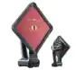 |
Distran瑞士 | Ultra Pro Max、Ultra Pro Lite | 30 cm 處可偵測 0.15 L/h 洩漏、180° 聲學視野、ATEX | 高噪音工廠氣體洩漏 | 連結 ↗ |
| 產品照片 | 廠商 | 代表產品／型號 | 關鍵規格／特色 | 典型應用 | 官網／來源 |
|---|---|---|---|---|---|
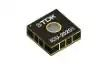 |
TDK InvenSense（Chirp）日本／美國 | ICU-10201／ICU-20201／ICU-30201、CH101／CH201 | MEMS 超音波 ToF 晶片、內建 DSP、視角最大 180°（ICU-30201 頁面標示停產，設計前需向 TDK 確認） | 機器人避障、人員偵測 | 連結 ↗ |
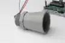 |
MaxBotix美國 | MB7389 HRXL-MaxSonar-WRMT | IP67 戶外超音波測距 | AGV 測距、液位 | 連結 ↗ |
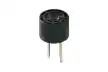 |
Murata 村田日本 | MA40H1S-R、MA58MF14-7N 換能器 | 40／58 kHz 超音波換能器 | OEM 測距模組 | 連結 ↗ |
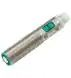 |
Pepperl+Fuchs 倍加福德國 | UC18GS（IO-Link） | 工業級超音波感測器 | 工廠自動化、液位 | 連結 ↗ |
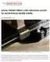 |
Sonair（新創）挪威 | ADAR 3D 超音波感測器 | 在粉塵、黑暗、玻璃等相機難處理的環境做 3D 感知 | AMR 安全避障 | 連結 ↗ |
| 細分市場 | 基準年規模 | 預測規模 | CAGR | 研究機構 | 來源 |
|---|---|---|---|---|---|
| MEMS 麥克風 | 24 億（2025） | 33.8 億（2031） | 5.9% | Mordor Intelligence | 連結 ↗ |
| 麥克風（全部，MEMS 為最大宗） | 28.8 億（2025） | 39.8 億（2030） | 6.7% | MarketsandMarkets | 連結 ↗ |
| 超音波感測器 | 49 億（2024） | 75 億（2030） | 7.7% | Grand View Research | 連結 ↗ |
| 超音波感測器 | 79.2 億（2026 估） | 154.8 億（2033） | 10.0% | Coherent Market Insights | 連結 ↗ |
| 聲學相機 | 2.6 億（2025） | 5.6 億（2034） | 8.9% | IMARC | 連結 ↗ |
嗅覺感測器是工廠安全最有價值的一環，尤其在電池處理區：在看到煙或火之前，就從電解液揮發氣體、H₂、CO 的變化判斷電池異常。
| 產品照片 | 廠商 | 代表產品／型號 | 關鍵規格／特色 | 典型應用 | 官網／來源 |
|---|---|---|---|---|---|
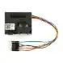 |
Sensirion 盛思銳瑞士 | SEN6x 模組（SEN62／63C／65／66／68／69C）、STCC4 微型 CO₂、SGP41 | SEN69C 一顆可輸出 9 種訊號：PM、溫濕度、VOC、NOx、甲醛、CO₂ | 室內空品、HVAC、清淨機 | 連結 ↗ |
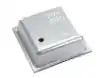 |
Bosch Sensortec 博世德國 | BME690（2025，BME688 後繼）、BME688 | 四合一（氣體/VOC、濕度、溫度、氣壓）3×3 mm；可用 BME AI-Studio 訓練自訂氣體分類器 | 智慧家居、食品新鮮度、穿戴 | 連結 ↗ |
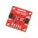 |
ScioSense荷蘭 | ENS161、ENS160 | 數位金屬氧化物多氣體感測，晶片端輸出 TVOC、eCO₂、AQI | 建築與消費空品 | 連結 ↗ |
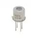 |
Figaro 費加羅日本 | TGS8410（甲烷）、TGS5141（CO）、FCM2630（冷媒）、TGS2616／TGS6812（H₂） | 金屬氧化物、電化學、NDIR；冷媒與氫氣偵測強項 | 瓦斯警報、冷媒洩漏、電池安全 | 連結 ↗ |
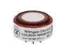 |
Alphasense（AMETEK 旗下）英國 | A-／B-系列電化學感測器、PID-AH VOC、OPC-R2 粒子計數 | ppb 等級 NO₂、O₃、SO₂、CO | 戶外空品網路、工安 | 連結 ↗ |
| Winsen 煒盛中國 | ZE07 電化學模組、MQ 系列、MEMS 氣體感測器 | 價格低、型號齊全 | 創客、消費與大量 OEM | 連結 ↗ | |
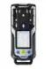 |
Honeywell／Dräger 德爾格美國／德國 | Sensepoint XRL、Searchline Excel Edge；X-am 8000、Polytron 8000 | 防爆認證固定式與攜帶式氣體偵測 | 石化、化工、人員安全 | 連結 ↗ |
| 產品照片 | 廠商 | 代表產品／型號 | 關鍵規格／特色 | 典型應用 | 官網／來源 |
|---|---|---|---|---|---|
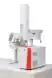 |
Alpha MOS法國 | HERACLES 電子鼻（快速氣相層析） | 實驗室氣味指紋分析 | 食品飲料、製藥品管 | 連結 ↗ |
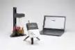 |
Aryballe法國 | NeOse Advance、Core Sensor Module | 矽光子 + 胜肽塗層感測 + AI 分析（新聞頁 2023 後未更新，合作前請確認營運狀態） | 食品、車艙異味、化妝品 | 連結 ↗ |
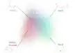 |
Osmo美國 | Olfactory Intelligence 平台 | AI 氣味地圖模型；2026/02 完成 7,000 萬美元 B 輪（偏香氛設計，非工業感測器） | 香氛設計、氣味數位化 | 連結 ↗ |
| 產品照片 | 廠商 | 代表產品／型號 | 關鍵規格／特色 | 典型應用 | 官網／來源 |
|---|---|---|---|---|---|
| Honeywell（Li-ion Tamer）美國 | Li-ion Tamer 排氣監測器 | 偵測電解液蒸氣，最多提前 30 分鐘預警熱失控；2025/07 自 Nexceris 收購 | 儲能櫃（BESS）、機房 UPS、電池暫存區 | 連結 ↗ | |
| Honeywell（Xtralis）美國／澳洲 | VESDA-E VEP／VEU／VES 吸氣式極早期煙霧偵測 | VEP 靈敏度為舊款 VLP 的 1.5 倍、抗粉塵 6 倍 | 電池室、資料中心、無塵室 | 連結 ↗ | |
| Amphenol SGX Sensortech英國／美國 | REDTR 熱失控感測器、BLD01／BLD2 電池洩漏感測器 | REDTR 同時量 H₂、CO₂、壓力、溫濕度，數秒內偵測電芯排氣 | 電動車電池包、工業電池 | 連結 ↗ | |
| Figaro日本 | TGS2616／TGS6812 氫氣感測器 | 選擇性 H₂ 偵測 | 電池室、燃料電池 | 連結 ↗ |
| 細分市場 | 基準年規模 | 預測規模 | CAGR | 研究機構 | 來源 |
|---|---|---|---|---|---|
| 氣體感測器（元件） | 17.8 億（2025） | 32 億（2033） | 7.6% | MarketsandMarkets | 連結 ↗ |
| 氣體感測器（較廣口徑） | 33 億（2025） | 64 億（2033） | 8.8% | Grand View Research | 連結 ↗ |
| 電子鼻 | 1.46 億（2025） | 2.93 億（2031） | 12.3% | Mordor Intelligence | 連結 ↗ |
| 電子鼻 | 0.28 億（2025） | 0.6 億（2034） | 8.5% | IMARC | 連結 ↗ |
| 數位氣味技術（含電子鼻） | 12.9 億（2025） | 31.3 億（2034） | 10.3% | Fortune Business Insights | 連結 ↗ |
| 鋰電池熱失控感測器 ⚠低可信度 | 1.45 億（2024） | 5.14 億（2034） | 13.5% | Zion Market Research | 連結 ↗ |
| 鋰電池熱失控感測模組 ⚠低可信度 | 約 3 億（2025） | 約 44 億（2035） | 30.8% | Future Market Insights | 連結 ↗ |
| 吸氣式煙霧偵測器 | 9.8 億（2026 估） | 15.1 億（2033） | 6.4% | Coherent Market Insights | 連結 ↗ |
機器的「味覺」主要是液體成分分析：酸鹼度、導電度、離子濃度、溶氧。電子舌仍多為實驗室設備，工業現場以數位化製程感測器為主。
| 產品照片 | 廠商 | 代表產品／型號 | 關鍵規格／特色 | 典型應用 | 官網／來源 |
|---|---|---|---|---|---|
| Insent（Intelligent Sensor Technology）日本 | TS-5000Z 味覺感測系統 | 脂質膜感測器，量測苦、酸、鮮、鹹、澀、甜與後味；一次最多 14 個樣品 | 飲料、食品、藥品苦味遮蔽 | 連結 ↗ | |
| Alpha MOS法國 | ASTREE 電子舌 | 電位式化學感測陣列 + 統計模型 | 製藥、食品品管 | 連結 ↗ |
| 產品照片 | 廠商 | 代表產品／型號 | 關鍵規格／特色 | 典型應用 | 官網／來源 |
|---|---|---|---|---|---|
| Endress+Hauser 恩德斯豪斯瑞士 | Memosens 2.0（CPS11E pH、CLS15E 導電度、COS22E 溶氧）+ Liquiline CM44 | 非接觸數位接頭，感測器自存校正與使用歷程；Heartbeat 診斷 | 化工、食品、生技、水處理 | 連結 ↗ | |
| Mettler Toledo 梅特勒-托利多瑞士／美國 | InPro X1 pH 感測器、M400 變送器、ISM 數位感測器 | ISM 預測保養與校正時機 | 製藥、生技、食品 | 連結 ↗ | |
| Hach 哈希（Veralto 旗下）美國 | SC4500 控制器、數位 pH／導電度／溶氧探頭 | Claros 雲端水務管理 | 自來水、廢水處理 | 連結 ↗ | |
| Yokogawa 橫河日本 | FLXA402 四線式分析儀、SENCOM 4.0 智慧感測器 | 多通道、數位感測器診斷 | 化工、電力、水處理 | 連結 ↗ | |
| Atlas Scientific（創客／原型）美國 | EZO-pH 電路板、EZO EC／DO／ORP | pH 0.001–14；UART 或 I²C | 原型開發、水耕、研究 | 連結 ↗ |
| 細分市場 | 基準年規模 | 預測規模 | CAGR | 研究機構 | 來源 |
|---|---|---|---|---|---|
| 電子舌 ⚠低可信度 | 4.8 億（2025） | 8.3 億（2035） | 5.7% | Market Research Future | 連結 ↗ |
| 製程液體分析儀 | 31 億（2025） | 53.6 億（2036） | 5.1% | Future Market Insights | 連結 ↗ |
| 製程液體分析儀 | 33.5 億（2026 估） | 50.7 億（2032） | 7.1% | 360iResearch | 連結 ↗ |
| 水質感測器（含環境監測） | 57.4 億（2024） | 91 億（2030） | 8.1% | Grand View Research | 連結 ↗ |
| pH 感測器 | 20.1 億（2025） | 40.4 億（2034） | 8.1% | Fortune Business Insights | 連結 ↗ |
「市場規模總覽」一章用兩張圖比較各感官市場的規模與成長率。 第 1–10 章依感官分類，每章包含：用途說明、廠商比較表（廠商、總部、代表型號、規格、應用、連結）、市場規模表、技術趨勢。 第 11 章是依 ITAD／倉儲工廠情境整理的「第一階段感官組合」候選清單，可作為 PoC 選型起點。 表格最右欄可直接點開官網或新聞稿，查看產品實拍照片與完整規格書。 不同研究機構的市場規模常相差 2–3 倍，主因是定義不同：只算元件還是含軟體與服務、是否包含車用或手機。本報告盡量並列兩家機構的數字呈現區間，並以 ⚠ 標示二線機構或定義新、推估性高的數據。金額單位為美元，「億」即 1 億美元。 大環境：感測器、Physical AI、人形機器人與 ITAD 大市場多已成熟：CMOS 影像感測器、機器視覺、RFID、溫度感測器年成長約 4–13%，競爭激烈、價格透明。 小而快的市場：LiDAR、ToF、UWB／RTLS、觸覺與 3D 相機基期小，但年成長約 15–31%，是 Physical AI 帶動的主要新需求。 出貨量指標：RAIN RFID 標籤晶片 2025 年出貨 427 億顆（2024 年為 528 億顆，下滑主因庫存調整，且兩年統計的廠商數不同）；禾賽與速騰 2025 年機器人光達合計出貨約 54 萬台。 與 ITAD 的關聯：ITAD 市場本身約 175–283 億美元（2025），和機器視覺規模相當；感測器是讓 ITAD 作業自動化、可追溯的工具層。 圖：各類感測器全球市場規模（對數刻度）。長條為兩家以上機構的估值區間，圓點為單一估值或估值接近；淺色斜線為低可信度或定義差異大的數據。 圖：各市場預測期間年複合成長率（CAGR）。各機構預測期間不同（約 2024–2036），僅供量級比較。 觸覺讓機器人知道「抓了多大力、東西多重、有沒有碰到」。人形機器人帶動觸覺皮膚快速發展；倉儲則以稱重感測器最實用。
| 產品照片 | 廠商 | 代表產品／型號 | 關鍵規格／特色 | 典型應用 | 官網／來源 |
|---|---|---|---|---|---|
| ATI Industrial Automation（Novanta 旗下）美國 | Axia80、Axia90 | Axia90：1000 N／50 Nm、EtherCAT、8 kHz、IP67 | 協作機器人組裝、拋光 | 連結 ↗ | |
| Bota Systems瑞士 | SensONE T5（2024/03）、PixONE 中空式 | T5：0.05 N 解析度、2 kHz、EtherCAT | 精密組裝、人形機器人手腕 | 連結 ↗ | |
| Robotiq加拿大 | FT 300-S | 可隨插即用於 Universal Robots | 協作機器人插件、打磨 | 連結 ↗ | |
| OnRobot丹麥 | HEX-E QC／HEX-H QC | 六軸 + 快換接頭 | 協作機器人力控 | 連結 ↗ | |
| SRI 宇立儀器中國 | 人形機器人系列 C025XX–C060XX、M3701F1（毫米級） | 六軸；月產能逾 5,000 顆 | 人形機器人手腕、腳踝、關節 | 連結 ↗ |
| 產品照片 | 廠商 | 代表產品／型號 | 關鍵規格／特色 | 典型應用 | 官網／來源 |
|---|---|---|---|---|---|
| GelSight（與 Meta FAIR 合作）美國 | Digit 360、GelSight Mini | 18 種以上感測模式、約 1 mN 靈敏度 | 靈巧操作研究 | 連結 ↗ | |
| XELA Robotics日本 | uSkin | 每個觸點三軸力；已整合進 Tesollo、Robotiq 等機械手 | 人形與工業機械手 | 連結 ↗ | |
| PaXini 帕西尼中國 | PX-6AX-GEN3、DexH13 靈巧手（1,140 個觸覺單元） | 每顆 15 維度感知；2026/08 完成 10 億人民幣融資 | 人形機器人、靈巧手 | 連結 ↗ | |
| Tashan 他山科技中國 | TS-F 指尖感測器、脈衝神經網路 AI 觸覺晶片 | 0.01 N 解析度；NVIDIA Isaac Sim 觸覺模擬合作 | 靈巧手 | 連結 ↗ |
| 產品照片 | 廠商 | 代表產品／型號 | 關鍵規格／特色 | 典型應用 | 官網／來源 |
|---|---|---|---|---|---|
| HBK（Spectris 旗下，2025/12 由 KKR 私有化）丹麥／德國 | U10M／U10F 力傳感器（可選 IO-Link） | 超高精度應變規 | 測試台、壓入配合 | 連結 ↗ | |
| Mettler Toledo瑞士／美國 | POWERCELL PDX 數位荷重元 | 自我診斷 | 地磅、槽體與料斗稱重 | 連結 ↗ | |
| Flintec（Indutrade 旗下）瑞典／美國 | 應變規荷重元 | 年產約 100 萬顆 | OEM 秤、工業稱重 | 連結 ↗ | |
| Zemic 中航電測中國 | 各式荷重元 | 大量、低成本 | OEM 秤、物流稱重 | 連結 ↗ |
| 細分市場 | 基準年規模 | 預測規模 | CAGR | 研究機構 | 來源 |
|---|---|---|---|---|---|
| 機器人力／扭矩感測器 | 4.67 億（2024） | 8.7 億（2033） | 7.3% | Grand View Research | 連結 ↗ |
| 人形機器人六軸力感測器 ⚠高不確定 | 2.39 億（2023） | 27.7 億（2030） | 45.2% | QYResearch | 連結 ↗ |
| 人形機器人力感測器（中國） | — | 人民幣 79 億（2030） | — | 中金公司（引用 GGII） | 連結 ↗ |
| 觸覺感測器 | 40.1 億（2025） | 83.7 億（2030） | 15.9% | Mordor Intelligence | 連結 ↗ |
| 電子皮膚（含穿戴健康貼片） | 73.9 億（2025） | 310.6 億（2034） | 17.3% | Precedence Research | 連結 ↗ |
| 荷重元 | 33.1 億（2024） | 51.9 億（2035） | 4.2% | Market Research Future | 連結 ↗ |
溫度感測分成接觸式（熱電偶、RTD、數位溫度 IC）與非接觸式（紅外線測溫、熱電堆陣列）。低成本熱電堆陣列正成為邊緣 AI 的「簡易熱視覺」。
| 產品照片 | 廠商 | 代表產品／型號 | 關鍵規格／特色 | 典型應用 | 官網／來源 |
|---|---|---|---|---|---|
| Endress+Hauser瑞士 | iTHERM TrustSens TM371／TM372 | RTD 內建參考點，可在線自我校正；藍牙／WirelessHART | 食品、製藥衛生製程 | 連結 ↗ | |
| WIKA 威卡德國 | TR10 RTD、TC10 熱電偶 | 模組化套管組件，符合 IEC／ASME | 石化、化工、一般製程 | 連結 ↗ | |
| DwyerOmega（Omega）美國 | RTD、熱電偶、變送器、資料記錄器 | 型錄式產品線非常齊全 | 實驗室、OEM、維修 | 連結 ↗ | |
| Optris德國 | CSmicro、CTlaser 測溫槍、Xi 1M 紅外熱像儀 | 短波 1 µm 款適合金屬與高溫製程 | 金屬、玻璃、塑膠 | 連結 ↗ | |
| Fluke Process Instruments美國／德國 | Thermalert 4.0、Endurance 高溫測溫儀 | 支援現場匯流排的智慧測溫儀 | 鋼鐵、水泥窯、玻璃 | 連結 ↗ | |
| Texas Instruments 德州儀器美國 | TMP117 | ±0.1 °C 數位溫度 IC，可取代 AA 級 RTD | 冷鏈、醫療、機器人熱管理 | 連結 ↗ | |
| Melexis 邁來芯比利時 | MLX90642（2025/04）、MLX90640／41 | 32×24 熱電堆陣列，晶片直接輸出溫度，不需主控 MCU | HVAC 人員偵測、電源過熱監控 | 連結 ↗ | |
| Heimann Sensor德國 | HTPA 熱電堆陣列（32×32 到 160×120） | 多種解析度 MEMS 熱電堆 | 熱像模組、家電、無人機 | 連結 ↗ |
| 細分市場 | 基準年規模 | 預測規模 | CAGR | 研究機構 | 來源 |
|---|---|---|---|---|---|
| 溫度感測器 | 74 億（2024） | 97 億（2029） | 5.6% | MarketsandMarkets | 連結 ↗ |
| 溫度感測器 | 67 億（2023） | 101 億（2030） | 6.0% | Grand View Research | 連結 ↗ |
| 熱電堆紅外感測器 ⚠二線機構 | 6.8 億（2025） | 10.8 億（2032） | 6.7% | ReportPrime | 連結 ↗ |
IMU 讓機器人知道自己的姿態與加速度；振動感測器則是設備預測保養的核心，碎紙機、馬達、風扇、輸送帶都適用。
| 產品照片 | 廠商 | 代表產品／型號 | 關鍵規格／特色 | 典型應用 | 官網／來源 |
|---|---|---|---|---|---|
| Bosch Sensortec德國 | BMI5 平台：BMI563（機器人）、BMI560（XR）、BMI570（穿戴） | 延遲 < 0.5 ms、可程式化邊緣 AI 分類器；2026 Q3 量產 | 機器人 SLAM、XR | 連結 ↗ | |
| TDK InvenSense日本／美國 | ICM-45686 | BalancedGyro、±4000 dps／±32 g、0.42 mA | 機器人、無人機 | 連結 ↗ | |
| STMicroelectronics瑞士／法國 | LSM6DSV80X | 雙加速度計（16 g + 80 g）、機器學習核心 | 衝擊與動作追蹤 | 連結 ↗ | |
| Analog Devices美國 | ADIS16550 | 陀螺零偏穩定性 1°/hr、−40 至 105 °C | 機器人、自駕、穩定平台 | 連結 ↗ | |
| Murata 村田日本／芬蘭 | SCH16T-K20（2026 H1 量產） | 零偏不穩定性 0.3°/h | 航位推算、工業機器人 | 連結 ↗ | |
| Movella Xsens；VectorNav荷蘭／美國；美國 | MTi-8、Avior、Sirius；VN-110、VN-210 | 航向參考與 GNSS 輔助導航模組 | AMR、無人機、移動機器人 | 連結 ↗ |
| 產品照片 | 廠商 | 代表產品／型號 | 關鍵規格／特色 | 典型應用 | 官網／來源 |
|---|---|---|---|---|---|
| SKF 斯凱孚瑞典 | Enlight Collect IMx-1 | 無線網狀網路、電池可用數年；2026/03 宣布收購台灣 G-Tech | 泵浦、風機、造紙 | 連結 ↗ | |
| Banner Engineering 邦納美國 | QM30VT3 | 三軸、FFT 資料、VIBE-IQ 機器學習、IO-Link／Modbus | 馬達、齒輪箱警報 | 連結 ↗ | |
| ifm 易福門德國 | VVB3（VVB301）、VVB001 | 三軸 IO-Link、ISO 20816-3 門檻、moneo 軟體 | 工廠旋轉設備 | 連結 ↗ | |
| Emerson 艾默生美國 | AMS Wireless Vibration Monitor | WirelessHART、PeakVue 軸承分析 | 製程工廠、防爆區 | 連結 ↗ | |
| Siemens 西門子德國 | SIPLUS CMS1200 + Senseye | 4 路加速度計輸入，在 PLC 內分析 | 傳動系統 | 連結 ↗ |
| 細分市場 | 基準年規模 | 預測規模 | CAGR | 研究機構 | 來源 |
|---|---|---|---|---|---|
| MEMS 整體（參考） | 154 億（2024） | 192 億（2030） | 3.7% | Yole Group | 連結 ↗ |
| MEMS IMU | 13.4 億（2026 估） | 22.8 億（2031） | 11.1% | Mordor Intelligence | 連結 ↗ |
| 高階慣性系統 | 51.8 億（2025） | 74 億（2031） | 6.1% | Mordor Intelligence | 連結 ↗ |
| 振動監測 | 18.5 億（2024） | 26.9 億（2029） | 7.8% | MarketsandMarkets | 連結 ↗ |
| 機器狀態監測 | 31 億（2024） | 47 億（2029） | 8.3% | MarketsandMarkets | 連結 ↗ |
| 預測保養（以軟體服務為主） | 109 億（2024） | 707 億（2032） | 26.5% | Fortune Business Insights | 連結 ↗ |
空間感回答「人或物在哪裡、怎麼移動」。室內精準定位以 UWB 為主，毫米波雷達適合隱私友善的人員偵測，編碼器則是機器人關節與輸送帶的位置回授。
| 產品照片 | 廠商 | 代表產品／型號 | 關鍵規格／特色 | 典型應用 | 官網／來源 |
|---|---|---|---|---|---|
| Texas Instruments美國 | IWRL6844、IWRL6432／IWRL6432AOP、IWRL1432 | 60 GHz、4 發 4 收、邊緣 AI | 人員計數與追蹤、機器人 | 連結 ↗ | |
| Infineon德國 | XENSIV BGT60TR13C、BGT60UTR11AIP | 60 GHz FMCW、天線封裝、低功耗 | 存在偵測、空間佔用 | 連結 ↗ | |
| Acconeer瑞典 | A121、A212 脈衝相干雷達；A2（新一代） | 毫米級距離量測；A2 支援 3D 成像與多目標追蹤 | 液位、距離、AGV 近接 | 連結 ↗ | |
| Vayyar以色列 | 4D 成像雷達 | 2024/09 裁員並聚焦智慧家居與汽車，工業已非重點 | 長照、車艙偵測 | 連結 ↗ |
| 產品照片 | 廠商 | 代表產品／型號 | 關鍵規格／特色 | 典型應用 | 官網／來源 |
|---|---|---|---|---|---|
| Qorvo（Skyworks 合併進行中）美國 | DW3110／DW3000、DWM3001C 模組、QM35825 SoC（2025/03） | QM35825：104 dB 鏈路預算、晶片端 AI／ML、雷達 + 測距 | RTLS 基站與標籤晶片 | 連結 ↗ | |
| NXP 恩智浦荷蘭 | Trimension SR250 | UWB 雷達 + 安全測距單晶片、±5 cm、3D AoA | 人員與資產追蹤、危險區域 | 連結 ↗ | |
| HID／Sewio（2024/08 被 HID 收購）瑞典／捷克 | Sewio UWB 標籤、基站、RTLS Studio | 完整 RTLS 軟硬體 | 汽車廠、堆高機與在製品追蹤 | 連結 ↗ | |
| Pozyx比利時 | Pozyx RTLS v2025.2、Platform v3.0 | omlox 連接器、符合新版歐盟 UWB 法規 | 工廠棧板與車輛追蹤 | 連結 ↗ | |
| Ubisense英國 | Dimension4 | 3D UWB 定位（曾揭露資安漏洞，導入時需評估） | 汽車與航太組裝 | 連結 ↗ | |
| Zebra 斑馬美國 | Dart UWB | 較早期平台，仍在官網列出 | 運動、工業 | 連結 ↗ |
| 產品照片 | 廠商 | 代表產品／型號 | 關鍵規格／特色 | 典型應用 | 官網／來源 |
|---|---|---|---|---|---|
| u-blox（2025/11 被 Advent 私有化）瑞士 | ZED-X20P、ZED-X20P-01B（2026/04） | 全頻段 RTK；-01B 支援 Galileo HAS 分米級 PPP、抗干擾 | 戶外機器人、堆場 AMR | 連結 ↗ | |
| Septentrio（2025/03 被 Hexagon 收購）比利時 | mosaic-X5、mosaic-G5 | 多頻 RTK、抗干擾 | 自主載具、機械控制 | 連結 ↗ | |
| Quectel 移遠中國 | LG290P、LG580P（2025/03） | LG580P：L1/L2/L5/L6、雙天線航向、CAN | 割草機、AGV、無人機 | 連結 ↗ |
| 產品照片 | 廠商 | 代表產品／型號 | 關鍵規格／特色 | 典型應用 | 官網／來源 |
|---|---|---|---|---|---|
| Heidenhain 海德漢德國 | ECI 1323 Splus／EQI 1335 Splus | 感應式、EnDat 3、SIL 3、內建加速度計可監測振動 | 機器人關節、伺服回授 | 連結 ↗ | |
| Renishaw 雷尼紹英國 | RESOLUTE、RXMA30、RLE 雷射編碼器 | 真絕對式光學、功能安全 | 半導體平台、工具機 | 連結 ↗ | |
| SICK德國 | AHS36／AHM36 IO-Link、DFS2x | IO-Link 絕對式編碼器 | 輸送帶、包裝 | 連結 ↗ | |
| Baumer 堡盟瑞士 | MAGRES EAM580、optoTurn EAL580 | 58 mm，支援 PROFINET／EtherCAT／EtherNet/IP | 一般自動化 | 連結 ↗ |
| 細分市場 | 基準年規模 | 預測規模 | CAGR | 研究機構 | 來源 |
|---|---|---|---|---|---|
| 毫米波雷達（車用約占 52%） | 46.2 億（2025） | 223.8 億（2033） | 21.8% | Coherent Market Insights | 連結 ↗ |
| 毫米波感測器與模組（窄口徑） | 1.03 億（2024） | 5.29 億（2030） | 30.6% | Grand View Research | 連結 ↗ |
| UWB（晶片＋系統） | 84.8 億（2025） | 176.2 億（2030） | 15.8% | MarketsandMarkets | 連結 ↗ |
| UWB 裝置出貨量（非金額） | 4.36 億台（2024） | 14 億台（2030） | 21% | ABI Research | 連結 ↗ |
| RTLS 即時定位系統 | 66.8 億（2025） | 156.7 億（2030） | 18.6% | MarketsandMarkets | 連結 ↗ |
| GNSS 晶片 | 83.7 億（2025） | 115.8 億（2031） | 5.6% | Mordor Intelligence | 連結 ↗ |
| 中高精度 GPS 接收機 | 34 億（2024） | 52 億（2029） | 8.8% | MarketsandMarkets | 連結 ↗ |
| 編碼器 | 30 億（2023） | 65 億（2030） | 11.6% | Grand View Research | 連結 ↗ |
| 編碼器 | 38.4 億（2025） | 104.9 億（2034） | 11.8% | Fortune Business Insights | 連結 ↗ |
電流是設備的「脈搏」。量測馬達電流特徵（MCSA）就能在不加裝振動感測器的情況下判斷設備健康，也能做機台級能耗分析。
| 產品照片 | 廠商 | 代表產品／型號 | 關鍵規格／特色 | 典型應用 | 官網／來源 |
|---|---|---|---|---|---|
| LEM 萊姆瑞士 | HMSR（SMD）、HLSR、GO SMS／SME、IN 系列 | 隔離式霍爾電流感測 IC；IN 系列高精度 | 變頻器、逆變器、充電樁 | 連結 ↗ | |
| Allegro MicroSystems美國 | ACS37100（2025/10）、ACS37017（2026/02） | ACS37100：TMR、DC–10 MHz、5 kV 隔離；ACS37017：靈敏度誤差 0.55% | GaN／SiC 電源、AI 機房電源、機器人 | 連結 ↗ | |
| Melexis比利時 | MLX91230、MLX91220／91221 | IMC-Hall；MLX91230 精度約 0.5% | 電池管理、馬達相電流 | 連結 ↗ | |
| Texas Instruments美國 | INA780（EZShunt）、INA232、TMCS1123 | 內建分流電阻的數位功率監測 | 板級功耗遙測 | 連結 ↗ | |
| Schneider Electric 施耐德法國 | PowerLogic PowerTag Energy（F160、M250）、PM8000、ION9000 | 可直接裝在斷路器上的無線電能感測；電能品質量測 | 分路與機台能耗 | 連結 ↗ | |
| Siemens德國 | SENTRON PAC3120／3220、PAC4220、Powermanager | 配電盤電力監測，Modbus／PROFINET | 低壓配電監控 | 連結 ↗ | |
| Eaton 伊頓愛爾蘭 | Power Xpert Meter 4000／6000／8000 | 電能品質與波形擷取 | 關鍵電力、資料中心 | 連結 ↗ | |
| Panoramic Power（Centrica）英國／以色列 | PAN-10 無線感測器、PowerRadar | 自供電夾式 CT 感測器 | 機台級能耗分析 | 連結 ↗ | |
| Samotics荷蘭 | SAM4 馬達電流特徵分析 | 在電控箱量電流與電壓；2025/11 起整合進 ABB ACS880 變頻器，免加裝感測器 | 馬達與泵浦預測保養 | 連結 ↗ |
| 細分市場 | 基準年規模 | 預測規模 | CAGR | 研究機構 | 來源 |
|---|---|---|---|---|---|
| 電流感測器 | 32.4 億（2025） | 54.1 億（2030） | 10.8% | MarketsandMarkets | 連結 ↗ |
| 電流感測器（含光纖、CT、羅氏線圈） | 42.5 億（2026 估） | 65.7 億（2031） | 9.1% | Mordor Intelligence | 連結 ↗ |
| 電力監測（軟硬體＋服務） | 74.1 億（2026 估） | 105.6 億（2031） | 7.3% | MarketsandMarkets | 連結 ↗ |
| 電能品質表（僅儀表） | 40 億（2025） | 77 億（2035） | 6.7% | Global Market Insights | 連結 ↗ |
| 馬達監測（MCSA 為其中一種技術） | 26.2 億（2026 估） | 36.4 億（2031） | 6.8% | Mordor Intelligence | 連結 ↗ |
這是機器獨有、人類沒有的感官：看一眼就知道「這是哪一台、哪一批、從哪裡來」。對 ITAD 的資產追蹤、盤點與資料安全鏈特別關鍵。
| 產品照片 | 廠商 | 代表產品／型號 | 關鍵規格／特色 | 典型應用 | 官網／來源 |
|---|---|---|---|---|---|
| Impinj美國 | M800 標籤晶片（M830／M850）、E910 讀取器晶片、R700 讀取器（2026/04 更新） | M800 出貨逾 50 億顆；新版 R700 運算力 2 倍、支援 Gen2X | 零售、物流、自動化盤點 | 連結 ↗ | |
| NXP荷蘭 | UCODE X（2026/01） | Gen2V2、超低功耗、記憶體可配置，對應歐盟數位產品護照 | 製藥、食品、零售 | 連結 ↗ | |
| Zebra美國 | FXR90 固定式讀取器 | 超耐用、IP65/67、4 或 8 埠 | 碼頭門、堆場 | 連結 ↗ | |
| Avery Dennison 艾利丹尼森美國 | AD Circus On-Metal、AD Midas Flagtag | 抗金屬與惡劣表面標籤 | 周轉箱、工業資產、伺服器 | 連結 ↗ | |
| Alien Technology美國 | Higgs 10、Higgs-EC | 低成本標籤晶片 | 大量標籤 | 連結 ↗ |
| 產品照片 | 廠商 | 代表產品／型號 | 關鍵規格／特色 | 典型應用 | 官網／來源 |
|---|---|---|---|---|---|
| Cognex美國 | DataMan 290／390（2025/01）、DataMan 380 | AI 解碼、一鍵設定 | 直接零件標記（DPM）、追溯 | 連結 ↗ | |
| Keyence日本 | SR-X100／SR-X300（2024/04） | AI 解碼、自動對焦 | 電子、醫療試管 | 連結 ↗ | |
| Datalogic 得利捷義大利 | Matrix 220 XAI（2025/02） | 機器學習 DPM 解碼、自動設定 | 汽車、包裝 | 連結 ↗ | |
| Zebra美國 | FS42、FS80 固定式工業掃描器 | 深度學習 OCR | 物流分揀 | 連結 ↗ | |
| Brady（承接 Honeywell 掃描器業務）美國 | 原 Honeywell 工業掃描器、印表機、行動電腦 | Honeywell PSS 事業以 14 億美元售予 Brady，2026/08/05 完成 | 倉儲、物流 | 連結 ↗ |
| 產品照片 | 廠商 | 代表產品／型號 | 關鍵規格／特色 | 典型應用 | 官網／來源 |
|---|---|---|---|---|---|
| Wiliot以色列／美國 | Gen3 IoT Pixel（2026/01） | 無電池 BLE，雙頻能量採集；可感測溫度、濕度、光、動作 | 循環盤點、可重複周轉箱、冷鏈 | 連結 ↗ | |
| Kontakt.io美國 | Sticker Tag（2024/09）、Asset Tag 2 Mini | 4 g、電池最長約 2.2 年、NFC 啟用 | 醫院與企業資產追蹤 | 連結 ↗ | |
| NXP荷蘭 | NTAG X DNA（2025/05） | NFC Type 4、PKI 認證、CC EAL6+ | 防偽、數位產品護照 | 連結 ↗ | |
| STMicroelectronics瑞士／法國 | ST25 動態 NFC 標籤 | NFC + I²C | 設備設定、維修紀錄 | 連結 ↗ |
| 細分市場 | 基準年規模 | 預測規模 | CAGR | 研究機構 | 來源 |
|---|---|---|---|---|---|
| RFID（整體） | 156 億（2025） | 230 億（2036） | 約 3.7%（推算） | IDTechEx | 連結 ↗ |
| RFID（整體） | 171.2 億（2025） | 462 億（2034） | 11.7% | Fortune Business Insights | 連結 ↗ |
| RAIN RFID 標籤晶片出貨（非金額） | 528 億顆（2024）→ 427 億顆（2025） | — | 2025 年因庫存調整下滑 | RAIN Alliance | 連結 ↗ |
| 2D 條碼讀取器 | 81 億（2024） | 136 億（2030） | 9.4% | Grand View Research | 連結 ↗ |
| 條碼掃描器（整體） | 78 億（2025） | 133 億（2034） | 5.9% | IMARC | 連結 ↗ |
| 藍牙裝置出貨（非金額） | 逾 54 億台（2025） | 81 億台（2030） | — | ABI Research／Bluetooth SIG | 連結 ↗ |
| Ambient IoT 無電池裝置出貨（非金額） | — | 11 億台（2030） | — | ABI Research | 連結 ↗ |
| NFC（含支付與手機） | 228.7 億（2025） | 374.2 億（2032） | 7.4% | MarketsandMarkets | 連結 ↗ |
對應「LiDAR＋Camera＋RFID/Barcode＋磅秤＋熱成像＋VOC/煙霧＋電流與振動」組合;為公開資訊整理的研究起點,實際採購前建議小規模 PoC 比較。
| 要解決的問題 | 感測器類型 | 候選廠商／產品 | 備註 |
|---|---|---|---|
| 人員與物體位置、動線 | 3D LiDAR | Ouster REV8 OS 系列、Hesai JT 系列、Livox Mid-360S、SICK multiScan100-S（需安全等級時） | 高處安裝，建立空間數位孿生；搭配相機做辨識 |
| 物品辨識、瑕疵與外觀判讀 | 工業／AI 相機 | Cognex In-Sight + OneVision、Keyence VS、Hikrobot SC 系列、LUCID Triton Smart | Hikrobot 價格較具競爭力；Cognex／Keyence 生態較完整 |
| 資產身分與自動盤點 | RAIN RFID + 條碼 | Impinj R700／Zebra FXR90 讀取器 + Avery Dennison 抗金屬標籤；Cognex DataMan 390、Keyence SR-X | 伺服器、硬碟等金屬資產需選抗金屬標籤 |
| 重量核對（進貨、拆解、出貨） | 荷重元／稱重 | Mettler Toledo POWERCELL PDX、Flintec、Zemic | 重量差異可作為缺件或資料載體遺漏的交叉驗證 |
| 過熱與異常熱源 | 熱像／熱電堆陣列 | Teledyne FLIR A50／A70、Seek EAGLE Core、Melexis MLX90642（低成本點位） | 電池暫存區、充放電測試區、配電盤 |
| 鋰電池排氣與極早期火災 | 氣體 + 吸氣式煙霧 | Honeywell Li-ion Tamer、Xtralis VESDA-E VEP、Amphenol SGX REDTR、Sensirion SEN6x | 排氣偵測可早於冒煙；需與消防規範一起評估 |
| 設備健康（碎紙機、馬達、輸送帶） | 振動 + 電流 | Banner QM30VT3、ifm VVB3、Panoramic Power PAN-10、Samotics SAM4 | 振動看機械、電流看電氣，兩者互補 |
| （選配）人員／堆高機精準定位 | UWB RTLS | HID Sewio、Pozyx；晶片：Qorvo、NXP Trimension | 需要次公尺級精度或安全區域警示時再導入 |